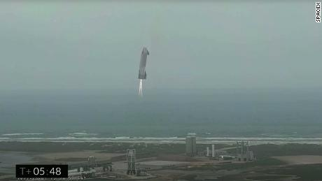

Nicolás Maduro sobre el coronavirus: 'Es arma de guerra biológica contra China'
El presidente de Venezuela, Nicolás Maduro, dijo que el coronavirus que tiene en alerta al mundo podría haber sido creado como un arma contra China.Hasta el momento los especialistas no han podido determinar de dónde viene el COVID-19, pero las principales hipótesis hablan de un origen animal.Maduro no dio ningún tipo de prueba que sustentara su afirmación.

Content Date: n/a
Download Date: 2021-05-13
Document ID: L0C04C6XP